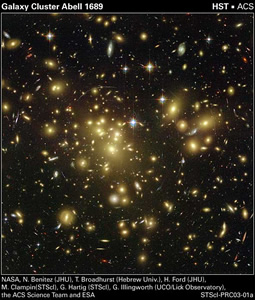
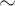

Credit: NASA, N. Benitez (JHU), T. Broadhurst (Racah Institute of Physics/The Hebrew University), H. Ford (JHU), M. Clampin (STScI), G. Hartig (STScI), G. Illingworth (UCO/Lick Observatory), the ACS Science Team and ESA
Observations have shown that high redshift (high-z), rich galaxy clusters have an excess of galaxies with blue colours when compared to similar nearby (low redshift; low-z) clusters. This effect was first recognised in 1978 by Harvey Butcher and Augustus Oemler Jr, and is now known as the Butcher-Oemler effect.
More recent studies have further refined Butcher and Oemler’s initial measurements, showing that the fraction of blue galaxies in rich clusters rises from approximately 3% for nearby (z<0.1) clusters, to 25% at z

0.5 and reaching 70% by z ~ 1. These studies have also shown that the fraction of blue galaxies in clusters depends on the cluster type or richness (i.e. how many galaxies the cluster contains), the cluster-centric radius considered in the study (what distance from the centre is sampled), and the galaxy magnitude limit adopted.Nevertheless, the overall trend of increasing blue galaxy fraction with increased lookback time is an important clue to how galaxies form. For example, the Butcher-Oemler effect can not be reproduced by simple primordial collapse models for galaxy formation, as such models predict uniformly red galaxies right back to high lookback times (i.e. ~z=2). This provides clear evidence that mergers and/or secular evolution must also play a part in galaxy formation.